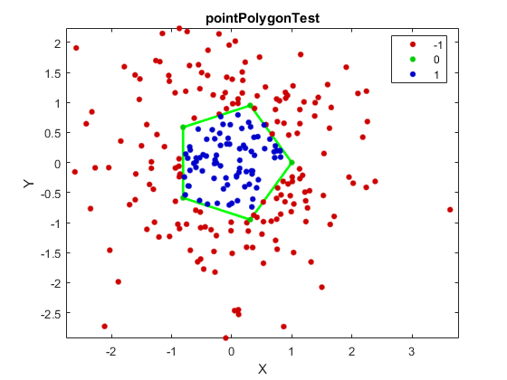

Points Inside Convex Polygon
We define a pentagon and a set of points. Then, determine which points lie inside, outside, or on the edge of the pentagon.
Contents
Data
Create polygon vertices that form a pentagon
t = linspace(0, 2*pi, 6).'; ct = [cos(t) sin(t)];
Create 250 random query points
pt = randn(250,2);
pt = [pt; ct]; % add points on edge, to ensure all cases are representedOpenCV
Determine whether each point lies inside, outside, or on the edge of polygon
tic if false loc = zeros(size(pt,1),1); for i=1:size(pt,1) loc(i) = cv.pointPolygonTest(ct, pt(i,:)); end else % vectorized call loc = cv.pointPolygonTest(ct, pt); end toc
Elapsed time is 0.022040 seconds.
MATLAB
Same using MATLAB function
tic [in, on] = inpolygon(pt(:,1), pt(:,2), ct(:,1), ct(:,2)); loc2 = zeros(size(in)); loc2(~in) = -1; % outside loc2(in & ~on) = 1; % inside loc2(on) = 0; % on edge toc
Elapsed time is 0.154738 seconds.
Results
Compare results, and show the number of points of each case
assert(isequal(loc(:), loc2(:))) fprintf('%d inside, %d outside, %d on edge\n', ... nnz(loc>0), nnz(loc<0), nnz(loc==0));
80 inside, 170 outside, 6 on edge
Plot the polygon and the query points
clr = eye(3) * 0.8; figure plot(ct(:,1), ct(:,2), 'g', 'LineWidth',2), hold on if ~mexopencv.isOctave() && mexopencv.require('stats') gscatter(pt(:,1), pt(:,2), loc, clr) else %HACK: GSCATTER not implemented in Octave scatter(pt(:,1), pt(:,2), [], clr(loc+2,:), 'filled') end hold off, axis equal xlabel('X'), ylabel('Y'), title('pointPolygonTest')